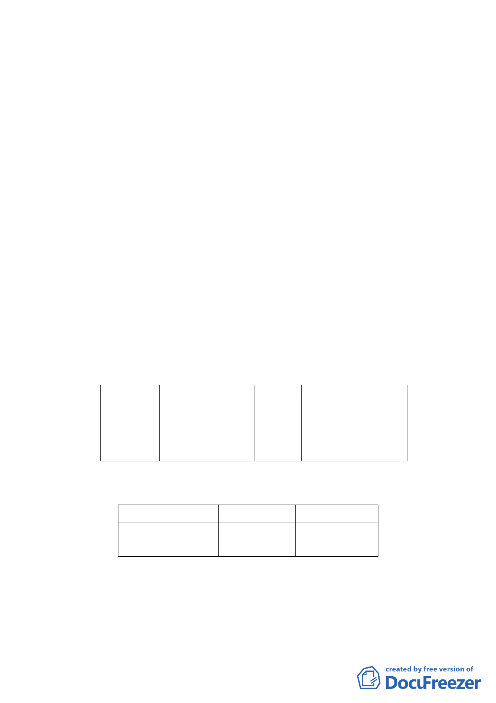

污染建築物，並經本府輻射污染建築物鑑定及處理委員會第9
次委員會議決議同意評定宜予拆除重建在案。
惟因計畫區內人數眾多整合困難，迄今仍無法順利重
建。故實施者依本府100 年9 月20 日公告「修訂臺北市老舊
中低層建築社區辦理都市更新擴大協助專案計畫」，爭取本
專案相關容積獎勵。
三、 原都市計畫及土地使用現況
（一） 原都市計畫
本案屬「修訂臺北市南港經貿園區部分住宅區土地使
用分區管制規定案」計畫範圍內，使用分區為第三種住宅
區，建蔽率45％，容積率225％。
（二） 土地使用現況
計畫區內皆為5 層樓之建築物，除東明街60 號1 樓
做商業使用，其餘大部分皆作住宅使用。
四、 變更細部計畫內容：
（一）變更土地使用分區
位置 原計畫 新計畫
南港區南港 第三種 第三種住
段四小段 住宅區 宅區(特)
120、120-20
兩筆地號
面積（㎡）
變更理由
3,681 配合「修訂臺北市老舊
中低層建築社區辦理都
市更新擴大協助專案計
畫」，變更原計畫內容。
（二）土地使用分區管制
1.使用強度
使用分區
原計畫
新計畫
第三種住宅區（特） 建蔽率45%
容積率225%
建蔽率45%
容積率225%
2.使用管制
本計畫之使用比照臺北市土地使用分區管制自治條
例第三種住宅區之使用組別。
3.本計畫區得適用100年9月20日公告之「修訂臺北市老舊
-2-